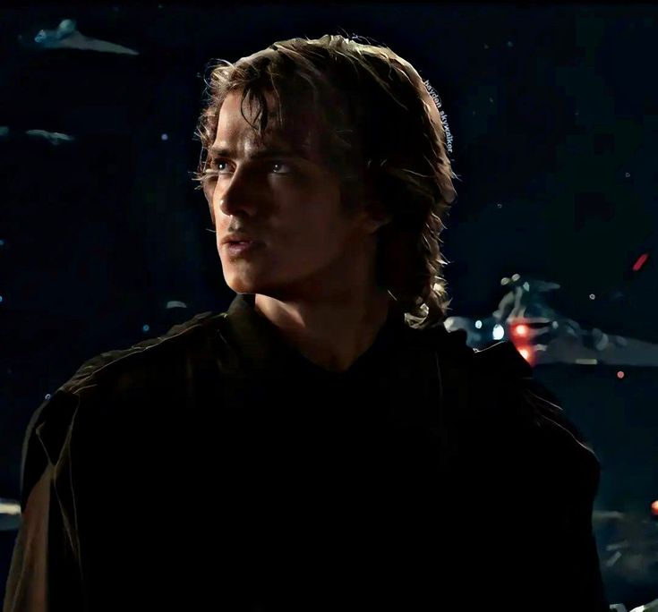

Historia
Anakin Skywalker es el icónico personaje central de la saga Star Wars, nacido esclavo en Tatooine alrededor del 41 ABY.
Descubierto por Qui-Gon Jinn como el "Elegido" profetizado para equilibrar la Fuerza, se une a los Jedi, entrena con Obi-Wan Kenobi,
se enamora de Padmé Amidala y lucha en las Guerras Clon como héroe. Manipulado por Palpatine (Darth Sidious), su miedo a perder a Padmé
lo lleva a traicionar a los Jedi en la Orden 66, convertirse en Darth Vader, masacrar a sus antiguos aliados y servir al Imperio hasta su redención al salvar a su hijo Luke en El Retorno del Jedi.
Información
Características
- Dominio excepcional del sable de luz, con estilo agresivo y acrobático (Forma V: Djem So).
- Uso avanzado de la Fuerza: telequinesis, precognición y asfixia sith.
- Habilidades de piloto prodigiosas, capaz de destruir naves capitales en combates espaciales.
- Intelecto mecánico superior para construir droides y reparar naves.
- Resistencia física extrema, potenciada por su traje de Vader post-incendio.
Momentos más iconicos
- Duelo en Mustafar contra Obi-Wan
- Su transformación en Darth Vader
- Redención en El Retorno del Jedi
Ficha técnica
| Edad | 23 años(Venganza de los Sith) |
|---|---|
| Peso | Aproximadamente 84 kg (pre-Vader). |
| Altura | 1.88 m (1.89 m en algunas fuentes; 2.03 m con armadura Vader). |
| Primera Aparición | Star Wars: Episodio I - La Amenaza Fantasma (1999). |
| Debilidades | Miedo emocional intenso a la pérdida, impulsividad, manipulación sith y vulnerabilidad a su ira. |
| Alias | Darth Vader, El Héroe sin Miedo (Guerras Clon), Ani. |
Registro de fans
Galería